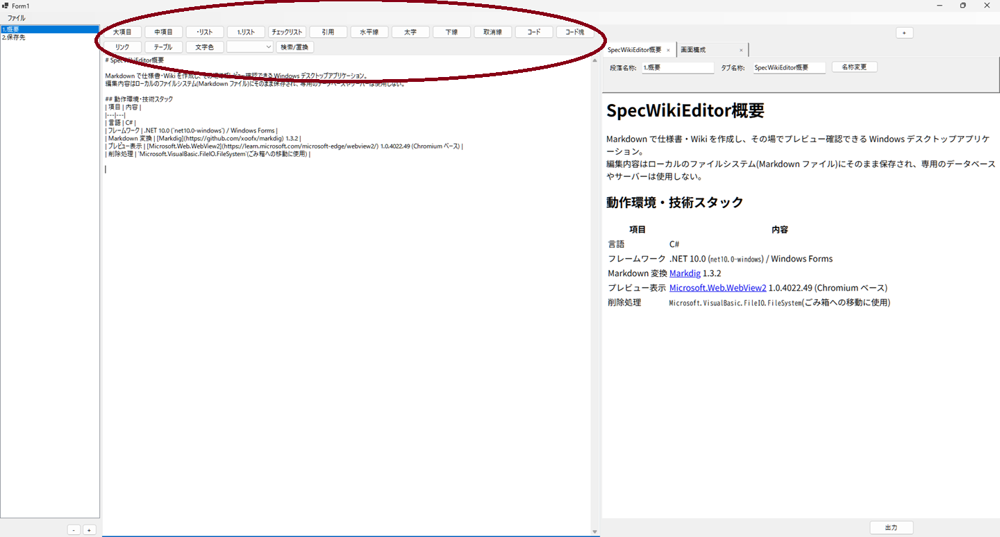

編集ツールバー

エディタ(txtEditor)上部に、Markdown/HTML の記法をボタン操作で挿入できるツールバーを配置している。ボタンは折り返し表示され、収まりきらない場合は自動的に行数が増える。
| ボタン/UI | 動作 |
|---|---|
| 大項目 | 選択中の行(複数行選択時は各行)の先頭に # (見出し1)を挿入 |
| 中項目 | 同様に ## (見出し2)を挿入 |
| ・リスト | 選択中の各行の先頭に - を挿入(Markdown標準の箇条書き) |
| 1.リスト | 選択中の各行の先頭に 1. 2. 3. …と連番で挿入 |
| チェックリスト | 選択中の各行の先頭に - [ ] を挿入(タスクリスト記法) |
| 引用 | 選択中の各行の先頭に > を挿入 |
| 水平線 | カーソル位置に --- の水平線を挿入 |
| 太字 | 選択範囲を **選択文字** で囲む(未選択時はプレースホルダーを挿入して選択状態にする) |
| 下線 | 選択範囲を <u>選択文字</u> で囲む(HTMLタグ直接埋め込み) |
| 取消線 | 選択範囲を ~~選択文字~~ で囲む |
| コード | 選択範囲を `選択文字` で囲む(インラインコード) |
| コード塊 | 選択範囲を ``` で囲む(コードブロック) |
| リンク | 表示文字・URL入力ダイアログを開き、[表示文字](URL) を挿入 |
| テーブル | カーソル位置に見出し行・区切り行・セル行からなる表の雛形を挿入 |
| 文字色 | Windows標準のカラーピッカーを開き、選択範囲を <span style="color:#rrggbb"> で囲む |
| 文字サイズ(ドロップダウン) | 「小(12px)・中(16px)・大(24px)・特大(32px)」から選ぶと、選択範囲を <span style="font-size:○○px"> で囲む |
| 検索/置換 | 「検索文字列」「置換文字列」欄と「次を検索」「すべて置換」ボタンを持つダイアログを開く(非モーダルで、開いたまま繰り返し使える) |
- リスト・見出し・引用・チェックリストは Markdown 標準記法(
-#>など)を使うため、プレビューで正しく反映される。 - 下線・文字色・文字サイズは標準 Markdown にはない機能のため、HTML タグを直接 Markdown 内に埋め込む方式で実現している(WebView2 は HTML をそのまま解釈するため正しく表示されるが、他の Markdown ビューアでは正しく表示されない場合がある)。
- 表・チェックリスト・取消線などの拡張記法に対応するため、Markdig のパイプラインで
UseAdvancedExtensions()を有効化している。 - Editor側で選択している箇所近辺にツールボックスと同じ特殊文字が入っている場合は、それを打ち消すトグル処理となっている
。- たとえば、「大項目」を押した際に「 # 」がカーソルの直前やテキストの選択範囲にあった場合は、これが消える。